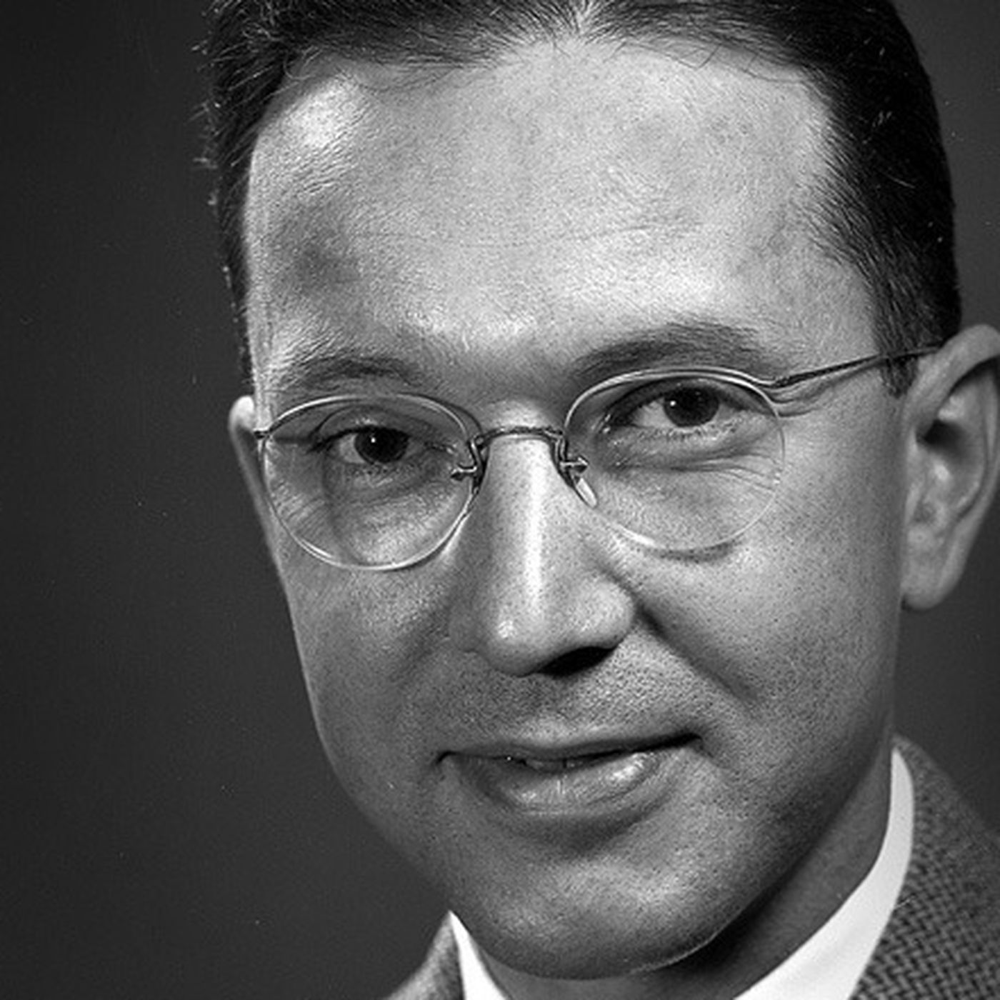

Уильям Хигинботем
Уильям Хигинботем (род. 25 октября 1910 года) был выдающимся физиком.
Немногие знают, что человек, который изобрел видеоигры в привычном нам понимании, также участвовал в создании одной из самых разрушительных технологий в мире.
Во время Второй мировой войны он работал в Лос-Аламосской национальной лаборатории и возглавлял группу электроники лаборатории в последние годы войны, где его команда разработала электронику для первой атомной бомбы . Его команда создала механизм воспламенения бомбы, а также измерительные приборы для устройства. Хигинботэм также создал дисплей РЛС для экспериментального бомбардировщика B-28 . Обладая опытом работы с ядерным оружием, Хигинботэм помог основать группу по нераспространению ядерного оружия Федерация американских ученых , выступая в качестве ее первого председателя и исполнительного секретаря. С 1974 года до своей смерти в 1994 году Хигинботэм работал техническим редактором журнала «Управление ядерными материалами», издаваемого Институтом управления ядерными материалами.
В 1947 году Хигинботэм работал в Брукхейвенской национальной лаборатории. , где он проработал до выхода на пенсию в 1984 году. В 1958 году, будучи главой приборного отдела в Брукхейвене, он создал компьютерную игру под названием Теннис для двоих для ежегодной экспозиции лаборатории. Симулятор тенниса , отображаемый на осциллографе , игра считается одной из первых видеоигр . На создание игры у Хигинботэма ушло несколько недель, и она стала популярным развлечением на шоу. Это был такой успех, что Хигинботэм создал расширенную версию для экспозиции 1959 года; эта версия позволяла изменять уровень гравитации, чтобы игроки могли моделировать теннис на Юпитере и Луне . Хигинботэм никогда не запатентовал теннис для двоих, хотя за свою карьеру получил более 20 других патентов.
Он вспомнил в 1983 году, в инструкции, прилагаемой к компьютеру, описывалось, как строить траектории и прыгающие формы для исследование. Я подумал: «Черт, это будет хорошая игра». [Работая с коллегой Дэйвом Поттером], мне потребовалось четыре часа, чтобы разработать один, и пару недель, чтобы технический специалист собрал его. ... Все стояли в очереди, чтобы играть [в день открытых дверей]. Остальные экспонаты, очевидно, были довольно статичными. ... Игра показалась мне чем-то очевидным. Даже если бы я [хотел запатентовать ее], игра принадлежала бы правительству.
В 1980-х критики и историки начали признавать важность тенниса для двоих в разработке видеоигр. В 1983 году Дэвид Ал , который подростком играл в эту игру на выставке в Брукхейвене, написал обложку для Creative Computing , в которой назвал Хигинботэма «дедушкой видеоигр» . Независимо Фрэнк Ловес взял интервью у Хигинботэма для рассказа об истории видеоигр в выпуске Video Review за июнь 1983 года.
В 2011 году Университет Стони Брук основал Коллекция исследований игр Уильяма А. Хигинботэма, управляемая главой специальных коллекций и университетских архивов Кристен Нитрей и доцентом кафедры цифровых культурных исследований Райфордом Гуинсом. Коллекция специально посвящена «документированию материальной культуры экранных игровых медиа» и, в частности, Хигинботэму: «сбору и сохранению текстов, эфемерных материалов и артефактов, которые документируют историю и работу новатора ранних игр и Brookhaven National. Научный сотрудник лаборатории Уильям А. Хигинботэм, который в 1958 году изобрел первую интерактивную аналоговую компьютерную игру «Теннис для двоих». В рамках сохранения истории тенниса для двоих Коллекция выпускает документальный фильм об истории игры и ее реконструкции Питером Такачем, физиком из Брукхейвенской национальной лаборатории.
Хигинботам остался мало интересуется видеоиграми, предпочитая, чтобы его помнили за его работу в ядерном нераспространении . После его смерти, когда количество запросов на информацию о теннисе для двоих увеличилось, его сын Уильям Б. Хигинботэм сказал Брукхейвену: «Крайне важно, чтобы вы включили информацию о его работе по нераспространению ядерного оружия . Это было тем, чем он хотел быть запомнился. " Для этой работы Федерация американских ученых назвала свою штаб-квартиру Хигинботэм-холл в 1994 году.